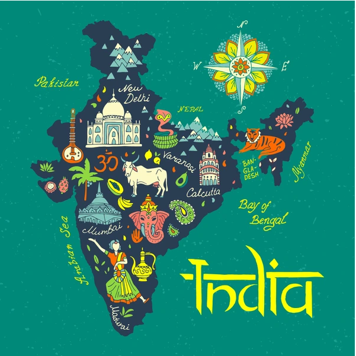

<main>
    <div>
    <div>
                
    </div>
    <div>
        <hi>profile</hi>
            <p>India is one of the oldest civilozation in the world with a kaleidoscopic variety and rich cultural
            heritage.It has acheived all-round socio-economic progress since Independence.As the 7th largest  
            country in the world,India stands apart from the rest of Asia,marked off as it is by mountains and
            the sea,which give the country a distinct geographical entity.Bounded by the Great Himalayas in the
            north,it stretches southward and at the Tropic of Cancer,tapers off  into the Indian Ocean between
            the Bay of Bengal oh the east and the Arabia sea on the west.
            <br><br>
            Lying entirely in the northen Hemisphere,the mainland extends between latitude 8deg 4' and 37deg 6'
            north,longitudes 68deg 7' and 97deg 25' east and measure about 3,124 km from north to south between
            the extreme latitude and about 2,933 km from eastto west between the extreme longitude.It has a
            land frontier of about 15,200 km.The total length of the coastline of the mianland,Lakshadweep
            Island and andaman & Nicobar Island is 7,516.6 km.</p>
    </div>
    </div>
</main>       
    


    

